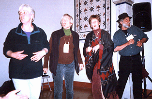

I N S T I T U T E N E W S
|
The Institute hosted a community retreat at the Whidby Institute on Whidbey Island. Here are a few scenes from the retreat, plus a note from Institute Director Charley Johnston:
Reconnection! Members of the ICD community, old and new, join in the first gathering circle.

When Marcy first proposed the idea of resurrecting the idea of community retreats, I was very supportive of the thought, but not sure I personally would attend. It was to come after a two-day faculty retreat, and I'm not the world's greatest lover of large groups, especially if I'm expected to be 'on stage' much of the time. Not only did I find the retreat a very valuable and timely effort, I personally had a great time. The thanks for this goes to the wonderful warmth and energy that everyone brought, and in particular to the event planners. The planners not only put together a beautifully crafted event, they held it in a way that let me have the joy of being there as just a participant. So thanks to everyone. And I can honestly say I'm looking forward to the next retreat, whenever that may be.
Warmly,
|
Who We Are || Educational Programs || Creative Systems Theory
ICD Press || Projects || Faculty/Officers